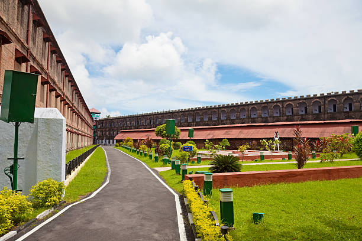

01
Radhanagar Beach
Consistently rated among Asia's finest beaches on Havelock Island, famous for powdery white sands, turquoise shallows, and crimson sunset views.

Discover India's emerald tropical archipelago — powder-white Radhanagar shores, vibrant coral reef scuba diving, historic Cellular Jail freedom monuments, and lush rainforests.
Explore the Islands ↓The Andaman and Nicobar Islands form a breathtaking archipelago in the Bay of Bengal, known for crystal-clear turquoise waters, dense tropical jungles, and thriving marine biodiversity.
From exploring the poignant historical galleries of Port Blair's Cellular Jail to scuba diving among vibrant coral gardens in Swaraj Dweep (Havelock Island) and relaxing on pristine shores, these islands offer an unforgettable tropical escape.
World-renowned white sand beaches, historic freedom struggle sites, and serene coral atolls.
Consistently rated among Asia's finest beaches on Havelock Island, famous for powdery white sands, turquoise shallows, and crimson sunset views.

A somber colonial-era Panopticon prison known as 'Kala Pani', honoring the supreme sacrifices of Indian freedom fighters with evening light and sound shows.

A tranquil, unhurried island getaway known for natural coral bridges, rich agricultural farmlands, and laid-back snorkeling spots.

The erstwhile British administrative headquarters featuring magnificent colonial ruins reclaimed by giant banyan tree roots and friendly deer.
Andamanese cuisine is heavily centered around fresh catches from the Bay of Bengal, tropical coconuts, and diverse culinary influences brought by mainland settlers.

A vibrant amalgamation of Bengali, Tamil, Telugu, and Nicobarese communities living together in peaceful cultural unity.
Unique ancestral heritage preserved by protected indigenous tribes inhabiting the remote interiors of the Nicobar and Andaman groups.
A lifestyle deeply connected to ocean conservation, scuba diving eco-tourism, shell crafts, and traditional wooden boat building.
Grand cultural celebrations including the annual Island Tourism Festival, beach volleyball tournaments, and classical arts showcases.
Discover all states, union territories, local food specialties, and centuries of living traditions.
← Back to Union Territories